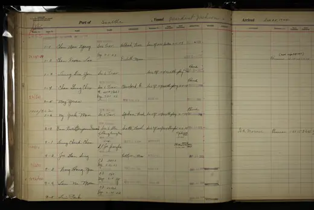

Seattle: 1924–1925 — President Jackson, 23 December 1924
访问原网页 ↗Visit original website ↗

S087 · U.S. Immigration and Naturalization Service / National Archives at Seattle · 1924-12-23
西雅图入境簿将 Dun Kwei 与 Benjamin Duncan 并列，记为首次抵达的学生，目的地西雅图。上海签发的第205/1924号证明日期为11月12日，准入戳为12月23日。The register lists Dun Kwei (Benjamin Duncan), a newly arrived student bound for Seattle. It records Shanghai certificate 205/1924, dated 12 November, and admission on 23 December aboard the President Jackson.
馆藏图像与原文Archived images and documents

原始网址Original URL
https://catalog.archives.gov/id/143733772?objectPage=382